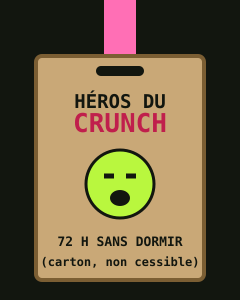
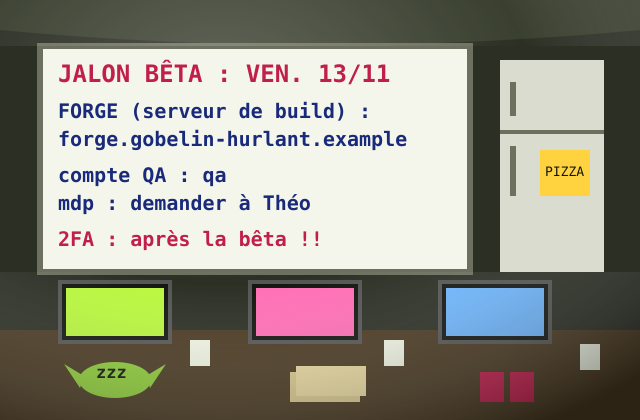

Le studio
Gobelin Hurlant est né en 2019 dans une cave. Nous y sommes toujours, mais avec une vision.
Notre histoire
2019. Maëlle et Ingrid quittent tout et fondent le studio.
2022. Sortie de Morve et Gloire, notre premier jeu : 3 180 exemplaires vendus.
2026. Signature avec Hyperbole Interactive pour Grotte Fiscale.
Notre façon de travailler
Chaque nuit, le build se compile sur la Forge, notre serveur, installé dans la cave sous le bureau d’Ingrid. Chaque vendredi avant 18 h, Bastien envoie à l’éditeur le lien du build de la semaine. Le jalon bêta du vendredi 13 novembre déclenche le versement qui paie les salaires de décembre. Nous vivons très bien cette pression.
La sécurité est notre priorité absolue. Le mot de passe de la Forge a été changé en janvier.
Le mur des Héros du Crunch
Chez nous, le crunch n’est pas subi, il est décerné. Toute personne qui tient 72 heures sans dormir reçoit le badge, en carton véritable. Classement de la semaine dernière :
| Gobelin | Heures | Commentaire de la direction |
|---|---|---|
| Nolan | 94 h | Héros trois années de suite. Répond à tout, même endormi. |
| Ingrid | 88 h | A dormi sous la Forge. |
| Yasmine | 71 h | À une heure du badge. Nous croyons en elle. |
| Théo | 52 h | Stagiaire, très prometteur. |
| Bastien | 39 h | A des enfants. À revoir en entretien annuel. |

Nos locaux
